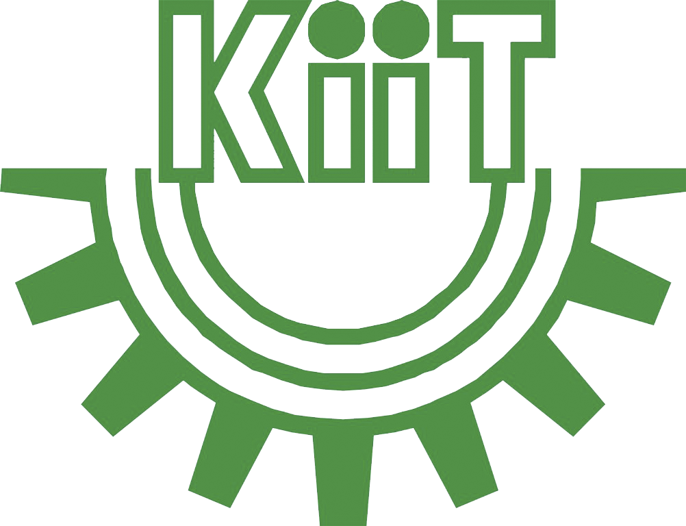

About
KRITARTH
Since its start, KRITARTH has proven to be a huge success as a fantastic venue for displaying talents while raising social consciousness on a range of subjects. Our Hon’ble Founder, Prof. Achyuta Samanta has breathed life into KRITARTH 6.0, a synonym of "Greatness," based on the ideals of His eminence, namely, Art of Giving, Compassion, and India Against Negativity, of which we are the flag-bearers. KRITARTH has been a tradition since the founding of KIIT and KISS, and our event has attracted over 5000 students. The objective of KRITARTH 6.0 is to raise public awareness of individuals' contributions to society as human beings.For a more sustainable future, KRITHARTH this year is based on the theme "Be the Change for a sustainable tomorrow." We want to conquer the inevitable with the birth of KRITARTH 6.0 on March 19th and 20th, 2022, with our joint efforts and a goal to bring change to all aspects of our society.
#BeTheChange
#KRITARTH
About KIIT
 Being one of the most premier universities in the eastern part of India, Kalinga Institute of Industrial Technology Deemed to be University offers more than 200 academic programmes in almost all the fields of education. First established as a Polytechnic Institute in 1992-93, KIIT has 1997 as its base year, when the engineering college was all set to start.
In 2004, KIIT was declared to be Deemed to be University by the Ministry of Human Resources Development, Government of India. It was 2016, when it was approbated with "A" Grade by the National Accreditation and Assessment Council (NAAC), India. It was the same year when KIIT was certified with Category "A" status by the Ministry of Human Resources Development, Government of India. Eight undergraduate Engineering Courses have been accredited by NBA (Washington Accord) in the year 2018-19. On 2nd August, 2019, KIIT was mandated to be an "Institute of Eminence '' (IoE), as it fulfills all the criteria required for the title.
Kalinga Institute of Industrial Technology Deemed to be University currently has 20 thriving campuses which consist of 30,000 students coming from all over India and 55 countries across the globe. It has carved a mark for itself in the global academic map by having MoU's with more than 190 universities in the world. More than 60,000 alumini of KIIT are placed in respectable positions in diverse fields ranging from corporate world, enterprise, startups, academics, civil servants, sports to politics and so on. The Tokyo Olympics 2021 had 3 participants who were students of KIIT, them being Dutee Chand who participated in 100m, 200m sprints, Shivpal Singh who took part in Javelin Throw and Bhavani Devi who took part in Fencing, being the first female from India to take part in the same.
About KISS
Kalinga Institute of Social Sciences (KISS) is a residential school providing free education, room and board, medical care, vocational, athletic and artistic training to 60,000 indigenous children (30,000 students in KISS, Bhubanseswar, 15,000 Alumni and 15,000 students in 10 satellite centres of KISS in Odisha) from 62 different tribal groups.
It started really small with 125 students in 1992-93 with an aim to give decent life to the poorest of the poor tribal children. In the course of its existence for the last 27 years, it has become a revolution among tribal population to eradicate poverty through Education. KISS has become the first exclusive tribal deemed to be university in the World, the status accorded by Ministry of Human Resources Development, Government of India.
KISS stands for Gender Equity, Vocational Empowerment and Women Empowerment based on the 3E formula of “Enable, Educate and Empower.” It has been in special consultative status with ECOSOC since 2015 and works in close collaboration with UNO and its agencies and organs. The most important principle of the success of this model is the indigenous control of education, where importance is given to preserving the culture, heritage and traditions of tribal communities.
About
Our Founder
Prof. Achyuta Samanta is an educationist, philanthropist, and social worker. He is the founder of Kalinga Institute of Industrial Technology (KIIT) and Kalinga Institute of Social Sciences (KISS), both educational institutions of global repute and recognition. KIIT is an Institution of Eminence and one of the most prominent universities in India and globe for professional education having more than 30,000 students from all over India and 53 other countries. KISS is a home for 60,000 indigenous children all absolutely free.
Besides Education and tribal upliftment, healthcare and rural development, Shri. Samanta has contributed immensely to art, culture, literature, film, media, society and national integration. It is really incredible that the child who lost his father at the age of four, brought up amidst severe poverty and deprivation with seven siblings and a widow mother in a quaint village in Odisha has accomplished this monumental work without any favour or backing in such a short span of time for the society. He has converted the remote village ‘Kalarabanka’, Cuttack into a Smart Village and the entire Manpur Panchayat into a model Panchayat (cluster of villages).
He has been conferred with more than 50 International and National awards and over 200 state awards besides two highest Civilian Awards from Royal Kingdom of Bahrain and Mongolia. He has been conferred with 44 Honorary Doctorate awards from universities in India and abroad. He is the first Odia to be a member of both UGC and AICTE. He is currently the Member of Parliament (Lok Sabha) from Kandhamal, Odisha and also the President of Volleyball Federation of India.
As a social reformer, he has been propagating “Art of Giving” (philosophy of life), a concept aimed at bringing peace and happiness around the globe.
Despite all his achievements, he leads a simple lifestyle, keeps on marching towards the cause of spreading smile among millions and achieving zero poverty, zero hunger, zero illiteracy.
About
Art Of Giving
Art of Giving is all about creating an unconditional and sustainable abundance of love, peace and happiness, and contentment for others through gestures of kindness and generosity. It was founded by Shri Achyuta Samanta on 17 May 2013. The key to peace and happiness lies in unlocking the Art of Giving in each individual. It is a not-for-profit initiative for spreading, supporting, and promoting the practice of the art of giving around the world.
VISION: To bring together the sense of peace and happiness among people of all ages, especially children and youth through genuine acts of giving back to society by the practice of empathy and compassion to the distressed without any discrimination.
MISSION: To make people aware and spread the philosophy of the Art of Giving across all sections of human society worldwide through activities of sharing love, care, compassion, wisdom, knowledge, skills, and talents.
About
Incredible
India
One of the oldest civilizations in the world, India is a mosaic of multicultural experiences. With a rich heritage and myriad attractions, the country is among the most popular tourist destinations in the world. It covers an area of 32, 87,263 sq. km, extending from the snow-covered Himalayan heights to the tropical rain forests of the south. As the 7th largest country in the world, India stands apart from the rest of Asia, marked off as it is by mountains and the sea, which give the country a distinct geographical entity. Fringed by the Great Himalayas in the north, it stretches southwards and at the Tropic of Cancer, tapers off into the Indian Ocean between the Bay of Bengal on the east and the Arabian Sea on the west. As you travel the expanse of the country, you are greeted by diverse nuances of cuisines, faiths, arts, crafts, music, nature, lands, tribes, history, and adventure sports. India has a mesmeric conflation of the old and the new. As the bustling old bazaars rub shoulders with swanky shopping malls, and majestic monuments accompany luxurious heritage hotels, the quintessential traveler can get the best of both worlds. Head to the mountains, enjoy a beach retreat, or cruise through the golden Thar, India has options galore for all. India is home to the finest architectural heritage, serene ghats, spectacular landscapes, and the largest tiger reserve.